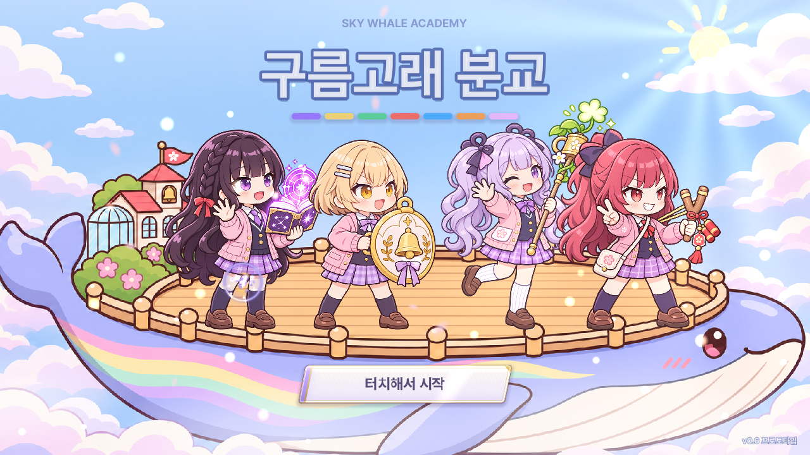

타이틀 · 로딩 · 터치해서 시작 (#1) — 「레인보우 아틀리에」
새 이름 「레인보우 아틀리에」(아틀리에 = 화실)에 맞춰 잿빛 하늘에 색을 다시 칠한다는 정체성을 로고로 만들었습니다. 무지개는 세로 기둥 대신 가로 붓 자국 · 팔레트 물감 · 번지는 수채로 넣었습니다. 캐릭터 그림은 그대로 두고, 하늘은 톤을 낮추고 결(종이 질감)과 비네트를 더했습니다. 고래는 그린 whale_v4가 천천히 기울며 떠가고, 앞으로 구름이 지나갑니다. 세 시안은 무엇을 주인공으로 두는지가 다릅니다. 맨 아래에서 부제를 따로 고르면 세 시안의 부제가 함께 바뀝니다. 로딩 숫자 · 팁 문구는 예시입니다.
지금 게임
만화풍 고래와 소풍 같은 배경이 캐릭터보다 더 귀여워 보이고, 「터치해서 시작」이 게임 안 공통 버튼 그대로입니다.

A · 붓 자국 로고 — 로고가 주인공
하늘을 가로지르는 무지개 붓 자국 위에 큰 로고를 얹고, 로딩은 붓이 줄을 칠해 나가며, 시작 안내는 붓 밑줄이 그려지는 손글씨 한 줄입니다.

B · 팔레트 엠블럼 — 아이들이 주인공
고래와 아이들을 화면 오른쪽에 크게 두고 로고는 왼쪽 위 팔레트 엠블럼으로 줄였으며, 로딩은 팔레트 물감 칸이 하나씩 차고, 시작은 출렁이는 물감 방울입니다.
C · 물드는 하늘 — 세계(이야기)가 주인공
로딩이 진행될수록 잿빛 화면이 왼쪽부터 수채처럼 물들어(경계선 = 로딩 막대) 로고까지 색이 차오르고, 다 물들면 꽃처럼 번지는 물감 사이로 시작 안내가 뜹니다.
부제 고르기
로고 아래 줄입니다. 고르면 위 세 시안의 부제가 바로 바뀝니다.
1 · 이야기형 — 아이들이 하늘에 색을 칠한다는 설정을 바로 말합니다.
2 · 문장형 — 회색 → 색의 대비를 한 문장으로, 가장 그림 같습니다.
3 · 장르형 — 스토어에서 무슨 게임인지 바로 알 수 있습니다.
4 · 장소형 — 고래 위 화실이라는 무대를 살려 예전 이름(구름고래)도 이어 갑니다.